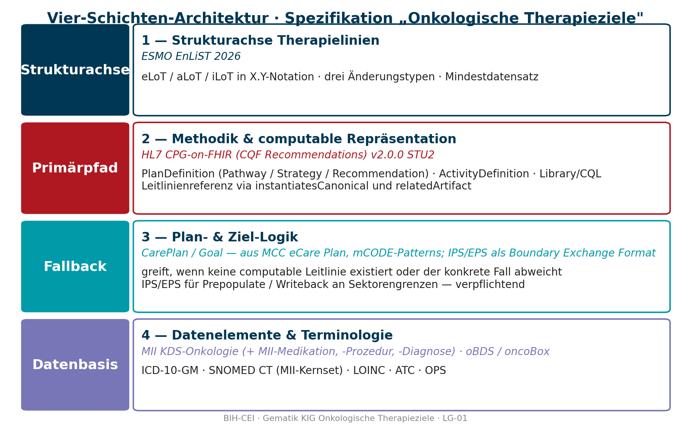
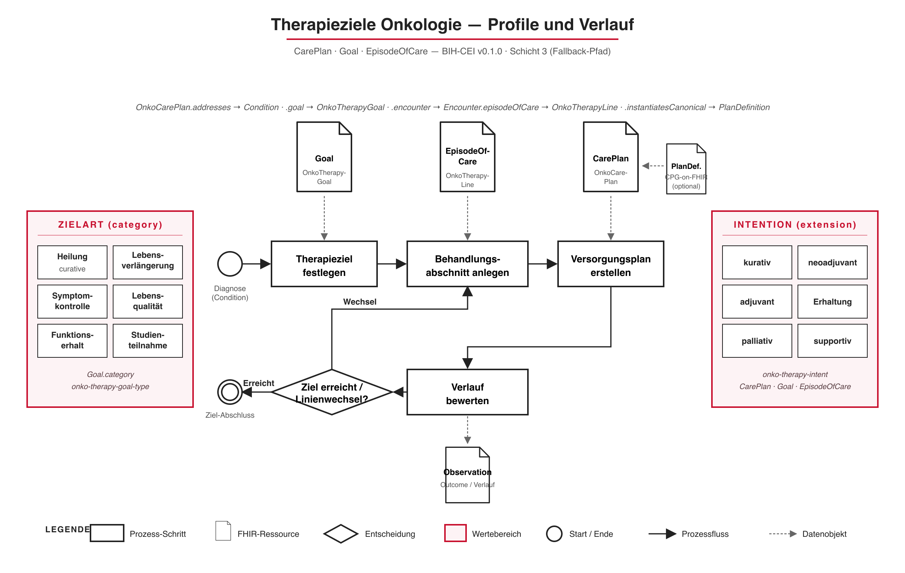

This fragment is not visible to the reader
| Type | Reference | Content |
|---|---|---|
| web | www.bihealth.org |
IG © 2026+ Berlin Institute of Health at Charité (BIH)
.
Package de.bih-cei.therapieziele-onkologie#0.1.0 basiert auf FHIR 4.0.1
.
Erstellt
2026-06-18
Links: Inhaltsverzeichnis | QA-Bericht |
| web | github.com |
Die Original-Fassung (Markdown-Master und docx) liegt im Repository unter
docs/L01-Analyse/
.
|
| web | github.com | mCODE GitHub Repository: github.com/HL7/fhir-mCODE-ig |
| web | doi.org | Quelle: Saini KS, Koopman M, Martins-Branco D et al. ESMO adaptation of Lines of Systemic Therapy (EnLiST): a consensus framework for standardising the designation of lines of therapy in solid tumours. Annals of Oncology 2026;37(5):608–623. DOI: 10.1016/j.annonc.2026.02.008 |
| web | doi.org | Saini KS, Koopman M, Martins-Branco D et al. ESMO adaptation of Lines of Systemic Therapy (EnLiST): a consensus framework for standardising the designation of lines of therapy in solid tumours. Annals of Oncology 2026;37(5):608–623. DOI: 10.1016/j.annonc.2026.02.008 |
| web | www.awmf.org | AWMF Regelwerk Leitlinien (Empfehlungsstärken, LoE): awmf.org/regelwerk |
| web | github.com | MII GitHub: github.com/medizininformatik-initiative/kerndatensatzmodul-onkologie |
| web | www.bihealth.org |
IG © 2026+ Berlin Institute of Health at Charité (BIH)
.
Package de.bih-cei.therapieziele-onkologie#0.1.0 based on FHIR 4.0.1
.
Generated
2026-06-18
Links: Table of Contents | QA Report |
|
architektur_stack.png  |
|
profile-overview.png  |
|
tree-filter.png
|